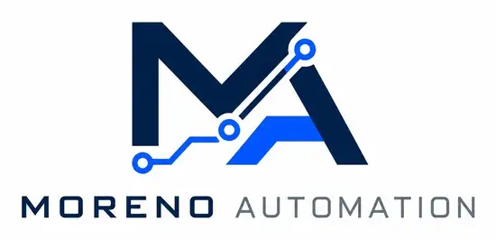

Automatisations
Faire circuler automatiquement les informations entre emails, documents, formulaires, tableurs, CRM, ERP, logiciels métier et API.

Moreno Automation · Solutions numériques sur mesure
Tâches répétitives, informations dispersées, outils qui communiquent mal, besoin d'un assistant IA ou d'un logiciel adapté : nous analysons d'abord la situation, puis nous choisissons la solution numérique la plus pertinente.
Solutions possibles
Nous ne cherchons pas à mettre de l'IA ou de l'automatisation partout. Le diagnostic sert à déterminer la solution la plus simple, fiable et utile pour votre situation.
Faire circuler automatiquement les informations entre emails, documents, formulaires, tableurs, CRM, ERP, logiciels métier et API.
Lire, rechercher, synthétiser, classer, préparer ou contrôler des informations avec un assistant spécialisé et des validations adaptées.
Créer un outil web adapté à votre fonctionnement : suivi de dossiers, interventions, tableaux de bord, espace client, gestion interne ou mini-CRM métier.
Combiner logiciel, automatisations, IA et intégrations lorsque le besoin ne peut pas être résolu proprement par une seule brique.
Le principe
Ce qui prend du temps, crée des erreurs ou limite l'activité.
Processus, outils, fréquence, données, sécurité, coût et contraintes.
Le choix final dépend du besoin réel, de la faisabilité technique, du niveau de risque et du budget.
Pour qui ?
Moreno Automation s'adresse d'abord aux organisations, mais certaines solutions simples peuvent aussi répondre à des besoins personnels sur mesure. Chaque demande est étudiée selon sa valeur, sa faisabilité et son coût.
Administration, opérations, qualité, logistique, recrutement, maintenance, gestion de dossiers, outils internes et circulation d'informations.
Demandes entrantes, suivi clients, facturation, classement, relances, reporting, tableaux de bord et outils métier simples.
Organisation de documents, suivi de démarches, rappels, classement ou petit outil personnel lorsqu'une solution sur mesure reste raisonnable.
Exemples possibles
Ces exemples montrent les différents types de réponses possibles. Ils ne constituent ni des références clients ni des solutions standard imposées.
Supprimer les copier-coller et les vérifications répétitives entre plusieurs outils.
Aider une équipe à retrouver et exploiter plus vite ses propres informations.
Créer un outil simple lorsque les tableurs et logiciels standards ne correspondent plus au fonctionnement réel.
Réunir plusieurs briques lorsque le processus doit être centralisé, assisté et automatisé.
Méthode
Une solution numérique n'a d'intérêt que si elle résout un problème réel, reste techniquement faisable et apporte une valeur cohérente avec son coût et sa complexité.
Nous cartographions le besoin, les outils, les utilisateurs, le volume, les blocages et ce qui doit rester humain.
Nous vérifions les API, données, connecteurs, sécurité, coûts externes, contraintes techniques et solutions possibles.
Nous validons le fonctionnement sur un périmètre limité avant de développer davantage.
Nous testons, documentons et déployons selon le projet, avec validations humaines et suivi lorsque cela est prévu.
Humain dans la boucle
La solution peut : lire, classer, extraire, préparer, relancer, rechercher, vérifier, journaliser et exécuter les actions autorisées.
L'humain garde : les décisions importantes, les arbitrages, les validations sensibles et les actions à fort impact selon le projet.
Questions fréquentes
Non. C'est justement le rôle du diagnostic : comprendre le problème avant de choisir la solution. Une automatisation simple peut parfois éviter de développer un logiciel entier.
Pas nécessairement. Nous cherchons d'abord à réutiliser les outils déjà en place lorsqu'ils sont adaptés et connectables de manière fiable.
Le coût dépend du périmètre, des intégrations, des API, des règles métier, des volumes, de la sécurité, des tests et du niveau de maintenance. Un prix ferme n'est proposé qu'après qualification suffisante du besoin.
Oui. Un prototype ou un premier module peut se concentrer sur le problème principal, puis évoluer uniquement si la valeur est démontrée.
Diagnostic initial
Vous n'avez pas besoin de connaître la solution technique. Décrivez simplement ce qui vous fait perdre du temps, crée des erreurs ou vous manque aujourd'hui.